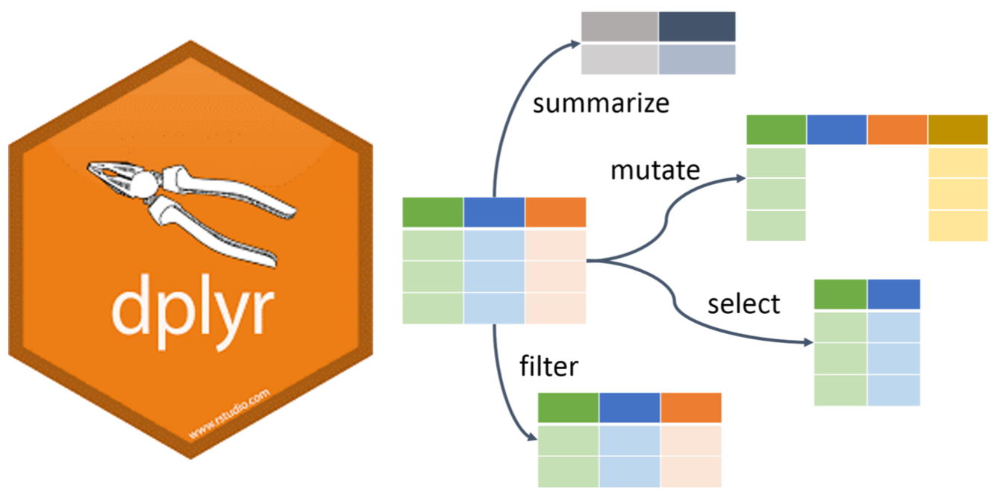
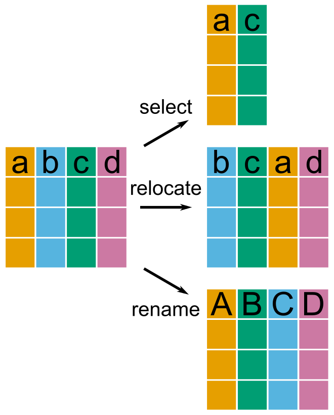
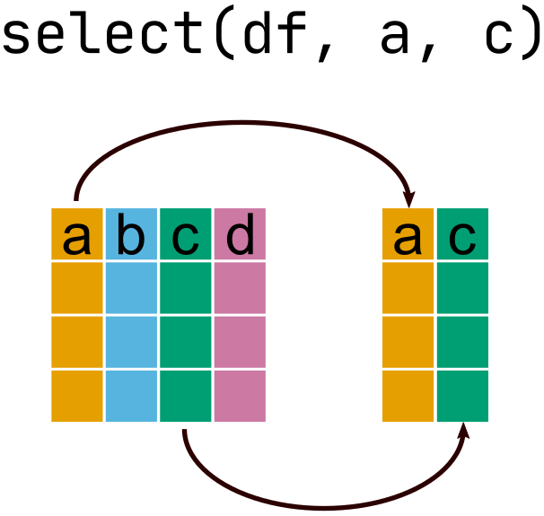
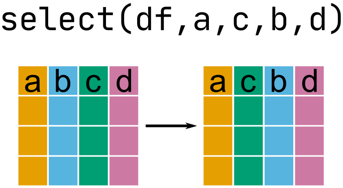
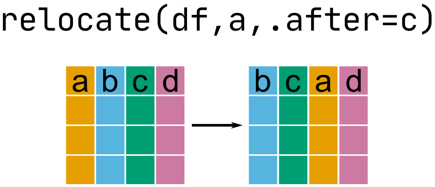
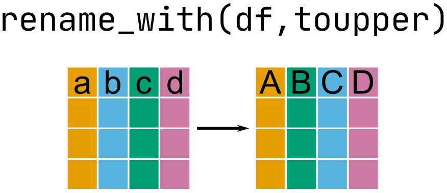

Selecting columns
Jeff Stevens
2025-02-12
Review
Mental model of data analysis

Data wrangling

Data wrangling

Selecting columns
Mental model of selecting columns
Data set
library(nycflights13)
glimpse(flights)Rows: 336,776
Columns: 19
$ year <int> 2013, 2013, 2013, 2013, 2013, 2013, 2013, 2013, 2013, 2…
$ month <int> 1, 1, 1, 1, 1, 1, 1, 1, 1, 1, 1, 1, 1, 1, 1, 1, 1, 1, 1…
$ day <int> 1, 1, 1, 1, 1, 1, 1, 1, 1, 1, 1, 1, 1, 1, 1, 1, 1, 1, 1…
$ dep_time <int> 517, 533, 542, 544, 554, 554, 555, 557, 557, 558, 558, …
$ sched_dep_time <int> 515, 529, 540, 545, 600, 558, 600, 600, 600, 600, 600, …
$ dep_delay <dbl> 2, 4, 2, -1, -6, -4, -5, -3, -3, -2, -2, -2, -2, -2, -1…
$ arr_time <int> 830, 850, 923, 1004, 812, 740, 913, 709, 838, 753, 849,…
$ sched_arr_time <int> 819, 830, 850, 1022, 837, 728, 854, 723, 846, 745, 851,…
$ arr_delay <dbl> 11, 20, 33, -18, -25, 12, 19, -14, -8, 8, -2, -3, 7, -1…
$ carrier <chr> "UA", "UA", "AA", "B6", "DL", "UA", "B6", "EV", "B6", "…
$ flight <int> 1545, 1714, 1141, 725, 461, 1696, 507, 5708, 79, 301, 4…
$ tailnum <chr> "N14228", "N24211", "N619AA", "N804JB", "N668DN", "N394…
$ origin <chr> "EWR", "LGA", "JFK", "JFK", "LGA", "EWR", "EWR", "LGA",…
$ dest <chr> "IAH", "IAH", "MIA", "BQN", "ATL", "ORD", "FLL", "IAD",…
$ air_time <dbl> 227, 227, 160, 183, 116, 150, 158, 53, 140, 138, 149, 1…
$ distance <dbl> 1400, 1416, 1089, 1576, 762, 719, 1065, 229, 944, 733, …
$ hour <dbl> 5, 5, 5, 5, 6, 5, 6, 6, 6, 6, 6, 6, 6, 6, 6, 5, 6, 6, 6…
$ minute <dbl> 15, 29, 40, 45, 0, 58, 0, 0, 0, 0, 0, 0, 0, 0, 0, 59, 0…
$ time_hour <dttm> 2013-01-01 05:00:00, 2013-01-01 05:00:00, 2013-01-01 0…Selecting columns
select()
Note
Notice that column names are not in quotes in the tidyverse
Selecting columns
select() by inclusion
select(flights, year, month, day, sched_dep_time, sched_arr_time)# A tibble: 336,776 × 5
year month day sched_dep_time sched_arr_time
<int> <int> <int> <int> <int>
1 2013 1 1 515 819
2 2013 1 1 529 830
3 2013 1 1 540 850
4 2013 1 1 545 1022
5 2013 1 1 600 837
6 2013 1 1 558 728
7 2013 1 1 600 854
8 2013 1 1 600 723
9 2013 1 1 600 846
10 2013 1 1 600 745
# ℹ 336,766 more rowsSelecting columns
select() by exclusion
select(flights, !c(dep_time, dep_delay, arr_time, arr_delay, carrier, flight, tailnum,
origin, dest, air_time, distance, hour, minute, time_hour))# A tibble: 336,776 × 5
year month day sched_dep_time sched_arr_time
<int> <int> <int> <int> <int>
1 2013 1 1 515 819
2 2013 1 1 529 830
3 2013 1 1 540 850
4 2013 1 1 545 1022
5 2013 1 1 600 837
6 2013 1 1 558 728
7 2013 1 1 600 854
8 2013 1 1 600 723
9 2013 1 1 600 846
10 2013 1 1 600 745
# ℹ 336,766 more rowsHelper functions
Collections of functions to facilitate selecting columns
Helper functions
Select consecutive columns with :
select(flights, year:day, hour, time_hour)# A tibble: 336,776 × 5
year month day hour time_hour
<int> <int> <int> <dbl> <dttm>
1 2013 1 1 5 2013-01-01 05:00:00
2 2013 1 1 5 2013-01-01 05:00:00
3 2013 1 1 5 2013-01-01 05:00:00
4 2013 1 1 5 2013-01-01 05:00:00
5 2013 1 1 6 2013-01-01 06:00:00
6 2013 1 1 5 2013-01-01 05:00:00
7 2013 1 1 6 2013-01-01 06:00:00
8 2013 1 1 6 2013-01-01 06:00:00
9 2013 1 1 6 2013-01-01 06:00:00
10 2013 1 1 6 2013-01-01 06:00:00
# ℹ 336,766 more rowsHelper functions
Select everything else with everything()
select(flights, time_hour, air_time, everything())# A tibble: 336,776 × 19
time_hour air_time year month day dep_time sched_dep_time
<dttm> <dbl> <int> <int> <int> <int> <int>
1 2013-01-01 05:00:00 227 2013 1 1 517 515
2 2013-01-01 05:00:00 227 2013 1 1 533 529
3 2013-01-01 05:00:00 160 2013 1 1 542 540
4 2013-01-01 05:00:00 183 2013 1 1 544 545
5 2013-01-01 06:00:00 116 2013 1 1 554 600
6 2013-01-01 05:00:00 150 2013 1 1 554 558
7 2013-01-01 06:00:00 158 2013 1 1 555 600
8 2013-01-01 06:00:00 53 2013 1 1 557 600
9 2013-01-01 06:00:00 140 2013 1 1 557 600
10 2013-01-01 06:00:00 138 2013 1 1 558 600
# ℹ 336,766 more rows
# ℹ 12 more variables: dep_delay <dbl>, arr_time <int>, sched_arr_time <int>,
# arr_delay <dbl>, carrier <chr>, flight <int>, tailnum <chr>, origin <chr>,
# dest <chr>, distance <dbl>, hour <dbl>, minute <dbl>Helper functions
Select columns containing specific text with contains()
# A tibble: 336,776 × 5
dep_time sched_dep_time arr_time sched_arr_time air_time
<int> <int> <int> <int> <dbl>
1 517 515 830 819 227
2 533 529 850 830 227
3 542 540 923 850 160
4 544 545 1004 1022 183
5 554 600 812 837 116
6 554 558 740 728 150
7 555 600 913 854 158
8 557 600 709 723 53
9 557 600 838 846 140
10 558 600 753 745 138
# ℹ 336,766 more rowsHelper functions
Select columns starting or ending with text with starts_with() or ends_with()
select(flights, starts_with("dep_"))# A tibble: 336,776 × 2
dep_time dep_delay
<int> <dbl>
1 517 2
2 533 4
3 542 2
4 544 -1
5 554 -6
6 554 -4
7 555 -5
8 557 -3
9 557 -3
10 558 -2
# ℹ 336,766 more rowsMoving columns
Move with select()

Move with select()
select(flights, carrier, flight, year:day)# A tibble: 336,776 × 5
carrier flight year month day
<chr> <int> <int> <int> <int>
1 UA 1545 2013 1 1
2 UA 1714 2013 1 1
3 AA 1141 2013 1 1
4 B6 725 2013 1 1
5 DL 461 2013 1 1
6 UA 1696 2013 1 1
7 B6 507 2013 1 1
8 EV 5708 2013 1 1
9 B6 79 2013 1 1
10 AA 301 2013 1 1
# ℹ 336,766 more rowsMove with relocate()

Move with relocate()
relocate(flights, carrier, flight, .before = year)# A tibble: 336,776 × 19
carrier flight year month day dep_time sched_dep_time dep_delay arr_time
<chr> <int> <int> <int> <int> <int> <int> <dbl> <int>
1 UA 1545 2013 1 1 517 515 2 830
2 UA 1714 2013 1 1 533 529 4 850
3 AA 1141 2013 1 1 542 540 2 923
4 B6 725 2013 1 1 544 545 -1 1004
5 DL 461 2013 1 1 554 600 -6 812
6 UA 1696 2013 1 1 554 558 -4 740
7 B6 507 2013 1 1 555 600 -5 913
8 EV 5708 2013 1 1 557 600 -3 709
9 B6 79 2013 1 1 557 600 -3 838
10 AA 301 2013 1 1 558 600 -2 753
# ℹ 336,766 more rows
# ℹ 10 more variables: sched_arr_time <int>, arr_delay <dbl>, tailnum <chr>,
# origin <chr>, dest <chr>, air_time <dbl>, distance <dbl>, hour <dbl>,
# minute <dbl>, time_hour <dttm>Renaming columns
Rename with select()
select(flights, airline = carrier, flight_num = flight, everything())# A tibble: 336,776 × 19
airline flight_num year month day dep_time sched_dep_time dep_delay
<chr> <int> <int> <int> <int> <int> <int> <dbl>
1 UA 1545 2013 1 1 517 515 2
2 UA 1714 2013 1 1 533 529 4
3 AA 1141 2013 1 1 542 540 2
4 B6 725 2013 1 1 544 545 -1
5 DL 461 2013 1 1 554 600 -6
6 UA 1696 2013 1 1 554 558 -4
7 B6 507 2013 1 1 555 600 -5
8 EV 5708 2013 1 1 557 600 -3
9 B6 79 2013 1 1 557 600 -3
10 AA 301 2013 1 1 558 600 -2
# ℹ 336,766 more rows
# ℹ 11 more variables: arr_time <int>, sched_arr_time <int>, arr_delay <dbl>,
# tailnum <chr>, origin <chr>, dest <chr>, air_time <dbl>, distance <dbl>,
# hour <dbl>, minute <dbl>, time_hour <dttm>Rename with rename()

Rename with rename()
rename(flights, departure = dep_time, arrival = arr_time)# A tibble: 336,776 × 19
year month day departure sched_dep_time dep_delay arrival sched_arr_time
<int> <int> <int> <int> <int> <dbl> <int> <int>
1 2013 1 1 517 515 2 830 819
2 2013 1 1 533 529 4 850 830
3 2013 1 1 542 540 2 923 850
4 2013 1 1 544 545 -1 1004 1022
5 2013 1 1 554 600 -6 812 837
6 2013 1 1 554 558 -4 740 728
7 2013 1 1 555 600 -5 913 854
8 2013 1 1 557 600 -3 709 723
9 2013 1 1 557 600 -3 838 846
10 2013 1 1 558 600 -2 753 745
# ℹ 336,766 more rows
# ℹ 11 more variables: arr_delay <dbl>, carrier <chr>, flight <int>,
# tailnum <chr>, origin <chr>, dest <chr>, air_time <dbl>, distance <dbl>,
# hour <dbl>, minute <dbl>, time_hour <dttm>